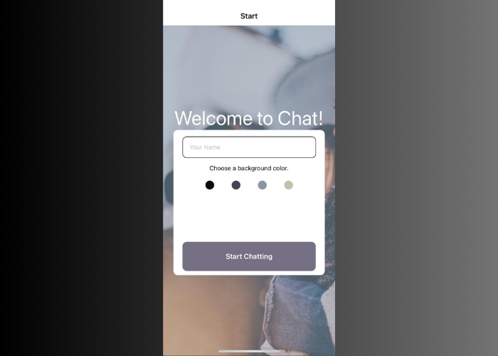
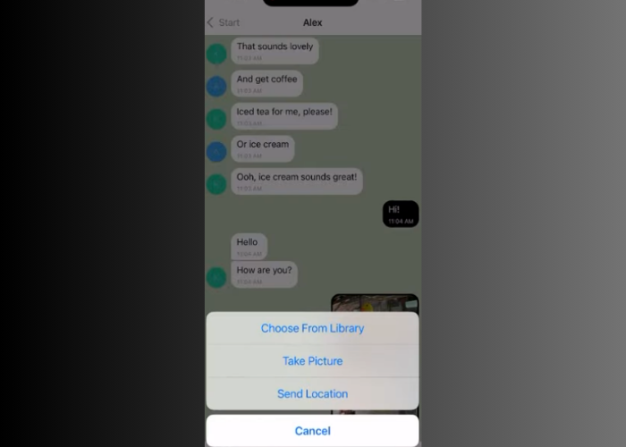

Chat App
Github Video LinkThe Goal:
Working with React Native and Gifted Chat, build a chat app that allows users to communicate, see old messages, send pictures, and share their location.
The Purpose:
Career Foundry, Full-Stack Immersion, Achievement 5
To build my first full web application, including high-quality HTML and CSS. An introduction into JavaScript and learning how to access an external API.
The Tools:
- JavaScript
- ReactNative
- Expo
- Google-Firestore
- Google-Firebase
The Process:
Transitioning into React-Native was very comfortable after working in React for my last two projects. I was excited to build for a mobile setting, it's something we interact with so much everyday that to dive into it with more detail was very satisfying. Using Gifted Chat as the base of our chat functionality was easy to implement and the documentation felt clear and accessible. I had a harder time building a mobile environment to test on my computer than I did with building the application.
Building the functionality to send images from the user's phone library or to send their current location also felt like a smooth process of just implementing the correct package and then inputting the necessary code described by the documentation. It was clear that you would keep implementing more functionality by just following this process.
The Outcome:
I built my first native mobile application in an overall smooth process of finding the necessary tools and studying that tool’s documentation until I felt ready to implement it. I would be curious to expand the application and just keep add functionality to it as practice.